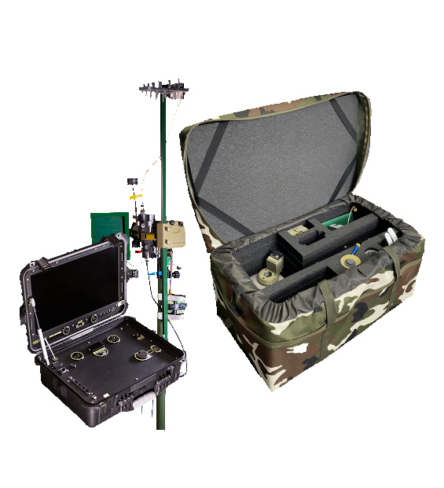
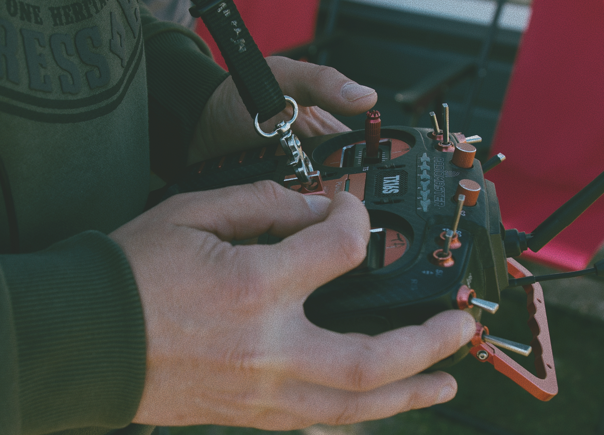
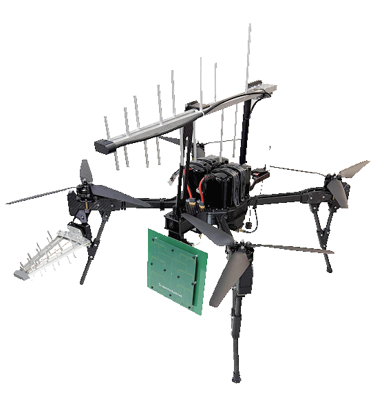

НАЗЕМНА СТАНЦІЯ КЕРУВАННЯ ТА СИСТЕМА ПОДОВЖЕННЯ ЗВ'ЯЗКУ


← НА ГОЛОВНУG STATION 369 — ЦЕ СИСТЕМА, ЩО РОЗШИРЮЄ МОЖЛИВОСТІ БПЛА, ЗАБЕЗПЕЧУЮЧИ СТАБІЛЬНУ ВЗАЄМОДІЮ МІЖ ОПЕРАТОРОМ І ЛІТАЛЬНИМ АПАРАТОМ.
ВОНА ВИКОРИСТОВУЄТЬСЯ ДЛЯ КЕРУВАННЯ БПЛА, ПЕРЕДАЧІ КОМАНД, ПРИЙОМУ ВІДЕО Й ТЕЛЕМЕТРІЇ, А ТАКОЖ ДЛЯ ЗБІЛЬШЕННЯ РОБОЧОЇ ДИСТАНЦІЇ СИСТЕМИ В СКЛАДНИХ УМОВАХ ЗАСТОСУВАННЯ. ТАКЕ РІШЕННЯ ДОЗВОЛЯЄ ОПЕРАТОРУ ПРАЦЮВАТИ ДАЛІ, БАЧИТИ БІЛЬШЕ Й ЗАЛИШАТИСЯ У БЕЗПЕЧНІШОМУ МІСЦІ.

